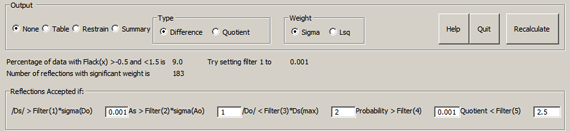
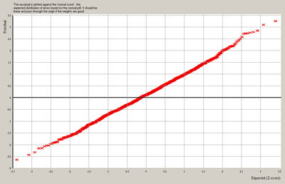
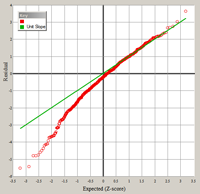
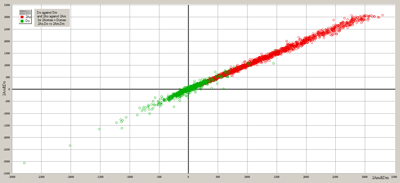
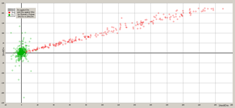
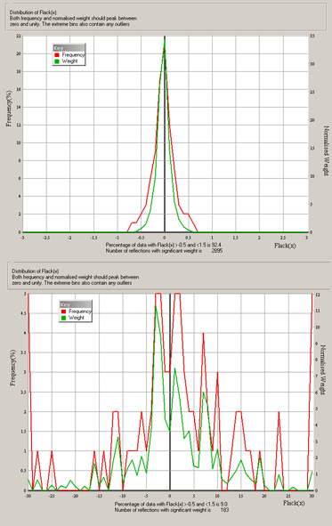
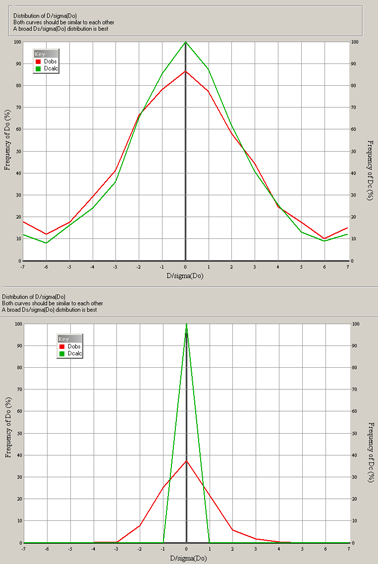
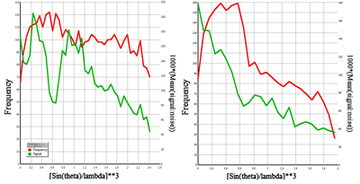

All materials in a non-centrosymmetric space group will have an absolute
structure.
This may arise either because the material is composed of enantiopure chiral molecules
(eg sucrose) or because achiral entities are arranged into a chiral structure (e.g.
SiO4 in quartz).
For non-centrosymmetric achiral materials, the crystal will have one or more polar
directions which must be correctly assigened if the Polar Axis Dispersion Error is to
be avoided.
For non-centrosymmetric chiral crystals, the Absolute Cofiguration of the material can
be assigned if the absolute structure determination was successful.
For a quick overview of absolute structurures and configuration, see: X-ray
crystallography and chirality: understanding the limitations. Amber L. Thompson, David
John Watkin, Tetrahedron: Asymmetry 20 (2009) 712–717. The term
Enantiopole, used in CRYSTALS since 1984, occurs in Gerhard Muller, Acta
Cryst. (1988). B44, 315-318, Enantiomorph-Polarity Estimation by Means of Flack's x
Refinement: Practical Experiences.
Analyse
Absolute Configuration. The Flack "x" parameter 
See: H. D. Flack and G. Bernardinelli., J. Appl. Cryst. (2000). 33,
1143-1148.
|
CRYSTALS has two different refineable parameters to help with the
determination of absolute structure.
The oldest, the Rodger's "eta" parameter is a multiplier onto f", and takes the
value +1 if the model has the correct hand, and -1 if it needs inverting. Flack
showed that this parameter is unreliable as eta approaches zero.
Direct Refinement
The Flack "x" parameter is the mixing term in
F2 = (1-x)F2+h + x2-h
and takes the value zero if the model has the correct hand, and +1 if it needs
inverting.
Either the Rodger's or Flack parameter should be refined simultaneously with the
other structural parameters since its value will influence them, and they in turn
will influence the s.u. on the absolute configuration parameter.
Post-refinement Methods Post-refinement methods analyse the
Bijvoet differences. Usually they produce more-or-less that same value for the
Flack parameter as direct refinement, but often with a much reduced esd. It has
been shown that the larger esd for direct refinement can usually be attributed to
the weighting scheme used during refinement, which is usually chosen to reflect
short comings in both the data and the model. Watkin and Cooper, Acta Cryst.
(2016). B72, 661–683. The Parsons(q), Hooft(y) and Bijvoet(d)
parameters and esds are generally very similar, and are the most reliable
estimators of absolute structure currently available.
The Hooft, Straver and Spek Probability parameters are robust if the material is
known to be enantio pure. Hooft, Straver, & Spek, (2008). J. Appl. Cryst.
41, 96–103.
Interpreting the Absolute Configuration Parameters
The interpretation is equally applicable to direct and post-refinement
methods.
If the s.u. on the Flack parameter is greater than 0.30,
the X-ray data contain no significant anomalous information so that the absolute
configuration cannot be assigned by X-ray means. The value of x can be set to
zero and not refined. (It may be appropriate to report x and its s.u. to
demonstrate that the calculation was actually performed).
If the s.u. is small enough (<0.04), then the parameter itself can be
evaluated. If it falls close to zero or unity, then the absolute configuration
has been determined. If it falls within this range, but is significantly distant
from the bounds, the material is probably twinned by inversion.
|
Absolute Configuration Menu
|
| Do = Io + - Io - |
Ds = Is + - Is - |
| Ao = (Io + + Io
-)÷2 |
As = (Is + + Is
-)÷2 |
| All quantities are weighted by the inverse of their
variance |
|
Filters
See also Filters, below
Filter_1 Sets the minimum accetpable significance, |Ds| ⁄
σ(Do), of the theoretical Bijvoet difference. In many fields 3σ
is regarded as significant; for small Friedif materials this threshold may
have to be reduced to 0.0001!
Filer_2 Sets the minimum accetpable significance of the theoretical
Bijvoet average compared with the standard uncertainty of the observed average.
This is important when Parson's Quotients are being computed.
Filter_3 Rejects Bijvoet pairs where the observed difference is improbably
large compared to the computed diference.
Filter_4> Regects reflections where the probability of the observed
Bijvoet difference is very small.
Filter_5 Rejects data where the Quotient
(Max(Ao,As)⁄(Min(Ao,As) is large. This may occur for very weak
reflections, where there are outliers in the data, or there is a problem with
data reduction or the atomic model.
Output
Table: A table of the Bijvoet pairs, including the intensities,
differences, averages and standard uncertainties. Could be pulled into a spread
sheet.
Restrain: The post-refinement estimate of the absolute structure parameter
and its su are set up as a restraint (LIST 16)
Summary: A summary of the important absolute structure parameters.
Type Selects whether simple Bijvoet differences or Parson's Quotients will
be used.
Weight Selects whether the weights will be computed from the expereimental
variances or be derived from the least squares weights.
|
Plots
Every plot has a button for saving the image as a .png file.
The data for the plot can be exported as a tab-delimited text file for
importation into a graphing package. Each row of the file contains the x and y
coordinates of each point, and the series identifier.
|
Normal Probability PlotNormal probability plot of the residual,
Do.

|
For a sample with strong anonalous differences, this should
be a line of unit gradient, with little scatter and no curving tails. If the
gradient is not unity, there is suspicion that the least squares weights in the
main refinement are inappropriate or that the structural model is deficient
(extinction, disorder, missing atoms, mis-typed atoms). However, a few points off
the unit gradient line near the ends of the line are not important.

A plot deviating greatly from a unit straight line usually indicated problems with
the data.
The gradient is computed using data between the first and ninth decile. |
2Ao/Do plotsPlots of Do vs Dm and 2Ao vs 2Am

|
These plots were introduced by Flack (Analysing Friedel
averages and differences Simon Parsons, Phillip Pattison and Howard D. Flack Acta
Cryst. (2012). A68, 736–749). For a strong scatterer, the anomalous
differences (green) cluster around and along the unit gradient, with a similar
dispersion to the anomalous averages (red). For a poor anomalous scatterer, the
differences cluster around the origin with a large spread in the Do
directions
 |
Flack Parameter Histogram
|
Distribution of the Flack Parameter.
The top graph is for a material with large anomalous scattering. Note that the
x parameter (horizontal axis) runs from ±3 for the top graph, and
±30 for the weak Friedif material, lower graph
The red line is the actual frequency of observation, the green is modified by
robust weights (which down weight outliers). |
Signal to Noise Histogram
|
Distribution of the Signal-to-Noise ratio.
The green line is the ratio of the calculated Bijvoet differences to the observed
standard uncertainty, The red line plots the ratio of the observed differences and
standard uncertainties.
For a high Friedif material one expects to see large computed ratios (i.e. the plot
is wide with some data in the extreme bins) and similar observed ratios.
For low Friedif data the green (calculated) distrution is narrower. If the data are
well-measured the red (observed) plot should follow the green, but usually it is
much wider.
|
Signal to Noise vs Resolution
|
Distribution of the calculated Signal:noise as a function of
resolution.
The horizontal scale corresponds to bins containing
approximately the same number of lattice points.
The red line is the number of reflections actually used from each bin.
The green line is the mean ratio of calculated Bijvoet differences to the observed
standard uncertainty for each bin.
Both examples are for data collected to high theta.
The right hand plot corresponds to the same exposure time being used throughout the
experiment
In the left hand plot the exposure time was increased for the high angle
measurements, leading to an improved signal:noise.
|
Text outputIn addition to the graphs, a summary of textual output is
sent to the screen. Full details are in the listing file (bfile#xx.lis). This can
be viewed by going to the tab "Files" and selecting "View Listing". You may need
to set your default file viewer to one which enables files to be accessed even
while they are in use by other applications (eg MS Notepad)
|
Plot Calculations
No of Reflections processed = 8636 No of Friedel Pairs = 3831
No of Friedel Pairs found = 3831 No of Friedel Pairs used = 3792
No of Unpaired Reflections = 18
No of Centric Reflections = 956
Friedel Coverage = 99 %
Observed:calculated signal = 1.11
Flack parameter obtained from original refinement
RA RD wRA2 wRD2 Friedif for all data and x=zero
2.8 28.0 3.8 29.7 497.51
Do-Dm R-factor(%) with Flack(x) of -0.03(0.01) = 27.20%
Distribution of NINT(D/sigma) for all data
Rabinovich & Hope, Acta A36, (1980), 670-674
Do 562 104 92 140 139 148 153 174 176 165 200 192 165 163 168 146 144 83 112 89 516
Dc 441 80 100 133 145 142 170 196 179 217 227 202 215 182 163 141 157 100 110 82 449
n -3.33 -3.00 -2.67 -2.33 -2.00 -1.67 -1.33 -1.00 -0.67 -0.33 0.00 0.33 0.67 1.00 1.33 1.67 2.00 2.33 2.67 3.00 3.33
Reflection Filters: filter_1= 0.0100 filter_2= 1.0000 filter_3= 2.0000 filter_4=0.0010
Continuing Calculations with 3792 pairs
Normal Probability Plot for 3034 Bijvoet pairs
Reduced Chisq= 1.0079
Gradient for zero intercept = 0.980
Slope, intercept and Cc (R) of NPP Plot = 0.980 0.111 1.000
The slope should be unity and the intercept zero
Outliers in Normal Probability Plot at delta(Z) > 0.37
Indices Ds Do Zo Zc /Zc-Zo/
8 16 2 -19.169 43.187 -4.370 -3.469 0.900
1 10 18 -1.056 41.037 -4.067 -3.182 0.885
8 15 7 -54.895 31.663 -3.700 -3.041 0.659
8 6 3 14.431 59.137 -3.668 -2.945 0.723
11 11 10 17.885 61.220 -3.329 -2.871 0.457
3 11 20 2.241 86.370 -3.277 -2.811 0.465
1 4 1 -461.896 -644.353 3.610 3.093 0.517
2 5 5 -1128.662 -1620.748 3.725 3.166 0.559
3 3 2 1449.455 1070.492 3.842 3.262 0.580
2 16 14 -11.616 -48.718 4.027 3.404 0.623
1 3 5 597.285 16.168 4.376 3.691 0.685
11 outliers in Normal Probability Plot at delta(Z) > 0.37
Difference Calculations for 3792 Bijvoet pairs
Principal Componenet Analysis
Major root,Components,angle 78341. 0.667 0.745 48.161
Minor root,Components,angle 1736. -0.745 0.667 -41.839
Gradient for zero intercept = 1.063
Slope, sigma = 1.062 0.005
Intercept, sigma = -0.002 0.000
Post-Refinement Flack = -0.031 0.003
Correlation coeff and r^2 of Scatter Plot = 0.957 0.916
Computing Histogram starting with 3792 Bijvoet pairs
|
For a reliable determination, the number of unpaired reflection should be
small.
The ratio of the observed to the computed r.m.s. Bijvoet differences should be
around unity. It is usually higher. A very large ratio may indicate poor data
(multiscan absorption correction, crystal decay etc) or that a heavy element may
be missing from the model.
The number of Friedel pairs used should be similar to the number found. If many
have been rejected, this may mean that some of the data has been badly
measured.
The number of reflections used in accumulating the scatterplot should similar to
the number found above. If a large fraction have been omitted, this may mean that
the anomalous scattering is very weak. Changing the filters to accept more data
may just introduce rubbish reflections. In particular, if you have to raise the
value of Filter_2 this may indicate poor data scaling or uncorrected absorption
effects. See Filters, below
The Do-Dc Rfactor is computed from
R = 100 * |Do - Dc| / |Do|
Normal Probability Plot
The normal probability plot should have unit gradient and zero intercept.
Values far from unity may mean that there are serious errors in the data, or that
there is a defect in the model. A few outliers can be expected. Right clicking on
them causes them to be excluded from (filtered out of) the main refinement. They
can be re-instated from the Filter menu. Because there are usually outliers at
the ends of the graph, only points between the first and ninth decile are used in
computing the gradient.
Principal Component Analysis of the Do Dc scatterplot.
If the weighted averages of x and y (the plot axes) are far from zero, there may
be a systematic error in the data or the model
The larger the rms values, the greater the dispersion of the data. This could
either be due to a strong anomalous signal, or to a lot of noise. The plot should
make the choice evident.
The Roots are the eigenvalues of the scatterplot (Prinicipal Component Analysis).
For a Do/Dc or Qo/Qc plot them largest root should have an angle (with the
x-axis) of 45 degrees, in which case the minor root is a measure of the noise. If
the major root has an angle of about 90 degrees, then the data is mainly
noise.
For the Do/Dc and Qo/Qc plots the correltaion coefficient and the coefficient of
determination (R 2) should be large. Small values mean that the values
of Do or Qo are not determined by the values of Dc or Qc.
The slope of the plot should be close to unity, and the intercept close to
zero.
The Histogram calculation computes a distribution of the Flack(x) for every
accepted Bijvoet pair.
|
Distribution of Residuals
Reflection Distributions
I represents Fsquared
D = I(+) - I(-)
Do = Io(+) - Io(-)
Number +ve mean(deltaI) rms(deltaI) Number -ve mean(deltaI)
rms(deltaI)
For Io
1865 71.1810 139.0263 1927 -83.0851 184.3125
For Is
1898 67.7912 135.4657 1894 -71.1456 159.6284
Quadrant averages: N, Mean(Do), Mean(Ds) [Summary of scatterplot]
-+ 196 11.02 -11.23 |++ 1663 78.53 75.14
---------------------------|----------------------------
-- 1698 -92.10 -78.06 |+- 235 -15.84 15.76
Flack(x) distributions (deciles, octiles, quartiles)
1/10 1/8 1/4 mean 3/4 7/8 9/10
-0.64 -0.50 -0.21 -0.03 0.15 0.45 0.57
Initial mean Flack(x) = -0.0294
Final mean Flack(x) = -0.0309 and LSQ Flack(x) -0.0309
Internal su = 0.1020
External su = 0.1342
Number of pairs with probability greater than 0.0010 = 3057
No of pairs for which delta(Io) has same sign as delta(Is)
Same sign Opposite sign
3358 434
LePage Analysis
Minimum signal : noise used = 6.0437
No. Available 3792
Total No.Same No.Opposite Signal:noise Prob Correct
10 10 0 13.2905 1.00
20 20 0 9.7892 1.00
50 50 0 7.3315 1.00
100 100 0 6.0437 1.00
|
The statistics for Io and Is should be roughly similar.
The number of reflections for which the residuals for Io and Is have the same sign
should exceed the number with opposite sign.
The distribtion for Io should be similar to that for Is. For a poorly determined
absolute structure, the Io distribution is often much wider than the Is
distribution.
The Flack(x) parameter can be computed and ranked for each Bijvoet pair. In this
example, 1/10 of the pairs give a Flack(x) of less than -0.64, 1/8 of less than
-0.50 etc. The mid point of the distribution gives a Flack(x) of -0.03. The mean
Flack(x) is refined by iterative reweighting to try to exclude inaccurate
data.
The Lepage analysis uses the numbers of reflections with the same or opposite signs
for ranges of increasingly unreliable data. The distribution can be used to provide
a robust estimate of the probability that the structure has been assigned the
correct chirality.
A Robust Alternative to eta Refinement for Assessing the Hand of Chiral
Compounds.
Y. Le Page, E. J. Gabe and Graeme J. Gainsford, J. Appl. Cryst. (1990). 23,
406-411 |
Estimates of the Absolute Structure Parameter
Flack Parameter & su -0.031 0.006 @
Using counting statistics weights
Hooft Parameter & su -0.025 0.002 $
Hole-in-one & su -0.032 0.003
Bijvoet Difference & su -0.031 0.003 £ (Using 3792 reflections. Correl
Coef = 96%)
Histogram re-weighted, 3057 reflections, 83.3% within -.5 to 1.5
Bijvoet Difference & su -0.031 0.003
Average of Ratios (x) & su -0.031 0.002 &
Average of Ratios (x) & su -0.031 0.002 % (corrected for npp, * 0.98)
@ Flack,1983, Acta Cryst A39, 876-881
£ Thompson & Watkin, 2011, J Appl Cryst, 44, 1077-1022
$ Hooft et al, 2008, J Appl Cryst, 41, 96-103
& Cooper et al, to be published
|
The Flack Parameter and its su were from the main refinement.
The first block of post-refinement analyses were computed using the counting
statistics variances.
The second block were computed with Robust re-weighting.
Experience shows that the Hooft and corrected Average of Ratios are often
consistent and probably the most reliable estimates of the absolute structure. If
there is a general lack of consistency and a substantial difference from the least
squares estimate, there may be other problems with the structure or
data.
|
The Hooft et al probabilities
Hooft probability analysis
For an enantiopure material, there are 2 choices, P2
P2(correct) 1.0000 i.e. 0.100000E+01
If 50:50 twinning is possible, there are 3 choices, P3
P3(correct) 1.0000 i.e. 0.100000E+01
P3(rac-twin) 0.0000 i.e. 0.000000E+00
P3(inverse) 0.0000 i.e. 0.000000E+00
G 1.0508
G S.U. 0.0043
|
We do not have a means of assessing the probability of The
Probability being correct. |
Filters
Excluded reflections - A reflection may fail more than one test
/Ds/ < 0.01 sig(Do) 13
As < 1.00 sig(Ao) 21
/Do/ > 2.00 2Ds(max) 0
Weight < 0.00100 735
Ratio > 2.50000 15
|
The number of reflections
failing each of the tests. Note that a reflection may fail more than one
test.
In this example Filter_1 (the minimum acceptable Bijboet difference
signal&Noise ratio) was left at the default on 0.01. Because the material
material contained only light atoms, most of the Bijvoet differences were tiny,
causing the exclusion of very many Friedel pairs. Filter_1 was reset manually to
something like 0.0001. A signal of this small magnitude is very unreliable, but the
Robust Re-weighting down weights the worst outliers. |
ASCII File Output
|
Table
H K L Fo+ Sig Fc+ Fo- Sig Fc- Do Dc Ao Ac Sig(Do)
-4 5 0 1 2 28762.53 706.45 29264.90 35556.04 701.30 35820.63 -6793.51 -6555.73 32159.28 32542.77 995.44
-1 5 0-1 16160.01 302.59 16617.79
-3 6 0 1 2 11109.57 313.61 11413.68 10339.38 196.65 10643.96 770.19 769.71 10724.47 11028.82 370.17
0 6 0 1 2 24984.76 493.82 25424.93 25433.55 616.86 25585.65 -448.79 -160.71 25209.16 25505.29 790.17
-5 7 0 1 2 11172.38 314.49 11542.74 14592.49 287.54 15679.00 -3420.11 -4136.27 12882.43 13610.87 426.13
|
Choosing the button Punch causes information about the reflection
data to be output to the bfile.pch file. The values for Friedel pairs and
derived values are output on each line. As usual, Fo implies F2o |
Restrain
REM Flack parameter = -0.0305 SU = 0.0065
REM Signal:noise filter(1) = 0.0010
RESTRAIN -0.0309, 0.0024= ENANTIO
|
Choosing the button Restraints causes a single restraint on the
Flack parameter to be output to FLACK.L16. The target value and su are taken
from the npp corrected Average of Ratios
To make use of this file, include
#USE FLACK.L16 in your LIST 16.
|
Summary
R, wR2, Friedif, Filter_1: Flack : H-in-1 : hooft : difference :
SIG 2.09 4.39 497.51 0.00100 : -0.03 0.01 : -0.03 0.00 : -0.03 0.00 : -0.02 0.00 :
re-wt-diff : histogram scaled n-pair, n-used, %used, H-used, %good, npp, main_npp, GoF
-0.03 0.00 : -0.03 0.00 0.00 3831 3804 99.5 3055 83.1 0.98 19.74 1.23
|
Choosing the button Summary outputs the various extimates of Flack
and their su.
|